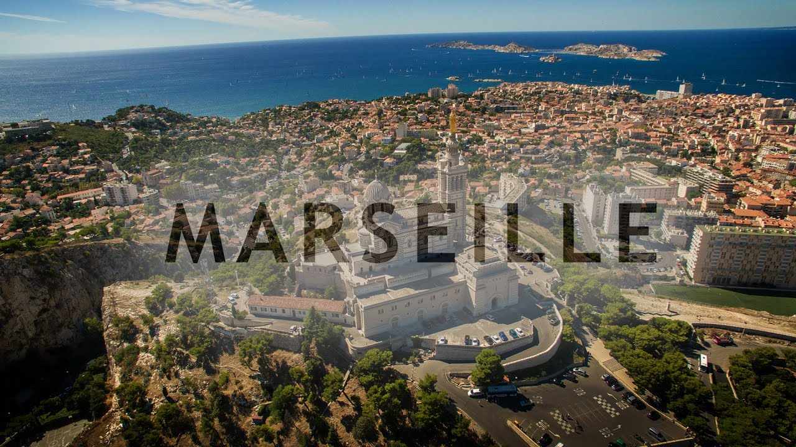
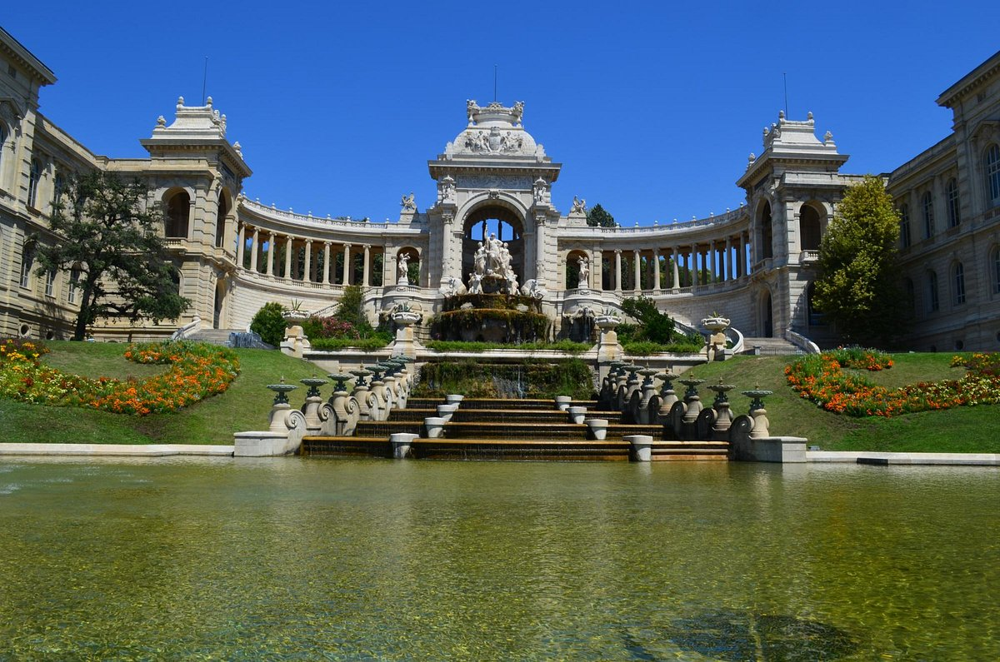
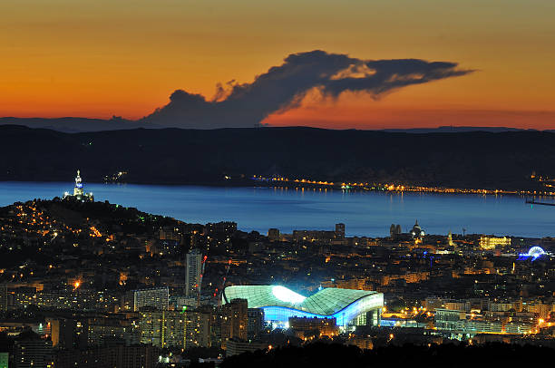
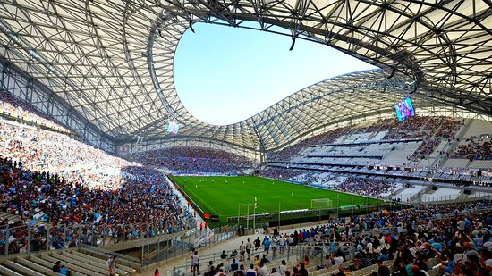

LA VILLE DE MARSEILLE
Marseille est une cité cosmopolite et vivante qui attire chaque année une foule de touristes du monde entier.
Classée ville d’art et d’histoire, elle se développe son dynamisme économique et culturel, aujourd’hui en plein essor.
Le tourisme et les loisirs constituent un des moteurs essentiels de l'économie marseillaise.
Ce secteur génère près de 15 000 emplois à tous les niveaux de qualification.
Avec 815 manifestations (en 2018), Marseille se positionne comme la ville française et méditerranéenne de référence en matière d’organisation de congrès et séminaires.
Avec plus d'1,85 million de passagers, Marseille est le 1er port de croisière de France, 5e port méditérranéen et fait son entrée dans le Top 15 des ports mondiaux .
SITUATION GEOGRAPHIQUE
Altitude Min. 0 m
Max. 652 m
Superficie 240,62 km2
Type Commune urbaine et littorale
Unité urbain

DEMOGRAPHIE
Gentilé Marseillais, Marseillaise
Population
municipale 873 076 hab. (2021 en augmentation de 1,33 % par rapport à 2015)
Densité 3 628 hab./km2
Population
agglomération 1 625 845 hab. (20211)
PATRIMOINE ET ARCHITECTURE
Le Château d'If
Situé au milieu de la baie de Marseille,
à environ un mille nautique du Vieux-Port, l'île d'If a longtemps servi de mouillage aux pirates,
aux contrebandiers, ou plus paisiblement aux pêcheurs.
Le Château d'If est la première forteresse royale de Marseille.

 Le Palais Longchamp
Le Palais Longchamp
Situé dans le quartier des Cinq Avenues,
le Palais fut édifié à partir de 1862 par la municipalité pour célébrer l'arrivée des eaux de la Durance dans la ville,
via le Canal de Marseille.
Les travaux du Palais furent dirigés par l'architecte Henri-Jacques
Espérandieu et achevés en 1869 pour des raisons budgétaires.
Il a été inauguré le 14 août de la même année et ouvert au public le lendemain,
15 août, jour de la fête de l'Empereur Napoléon III.


LE SPORT A MARSEILLE
Stade municipale
La Ville de Marseille s'est dotée en 2011 "d'un plan stade" destiné à améliorer,
à revitaliser et à développer les équipements sportifs qui accueillent les Marseillaises
et les Marseillais pratiquant le football, le rugby, l'athlétisme... ou
des sports ayant des contraintes particulières comme le football américain,
le baseball ou le hockey sur gazon.
 